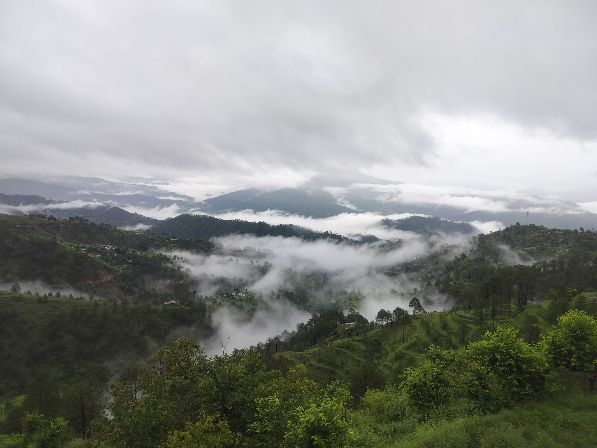
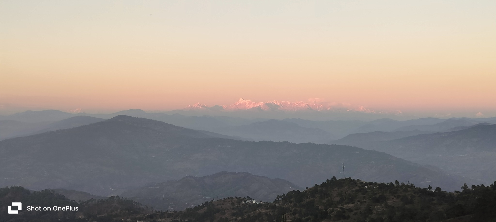
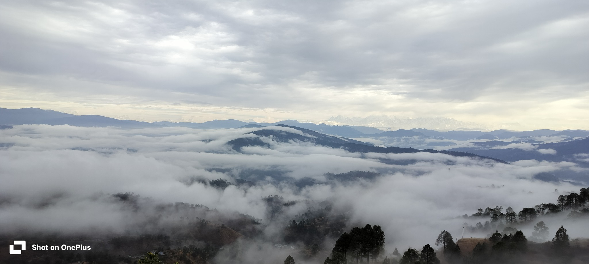

Quiet Trails · Uttarakhand
A little closer
to the hills.
Small moments from the mountains I call home—soft morning light, clouds moving through the valleys, and landscapes worth pausing for. Photographs captured on my own trails.

Where the clouds settle
Misty valleys, green slopes, and a slower kind of morning.

First light
Warm light touching the distant Himalayan peaks.

Above the clouds
Layers of hills disappearing into the mist.